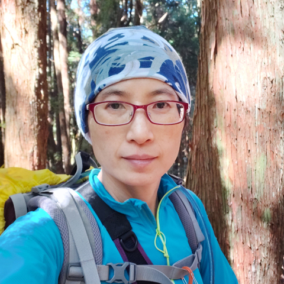
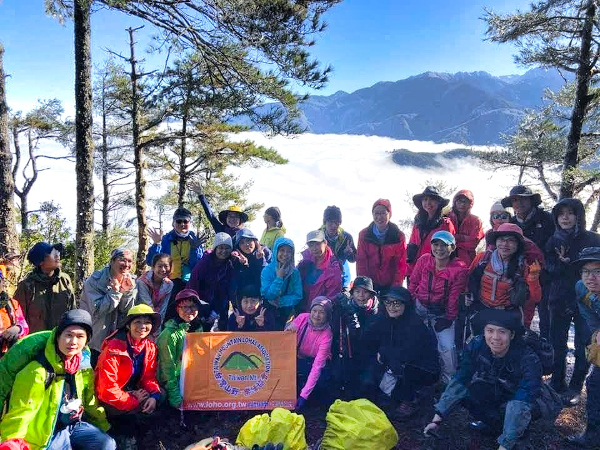
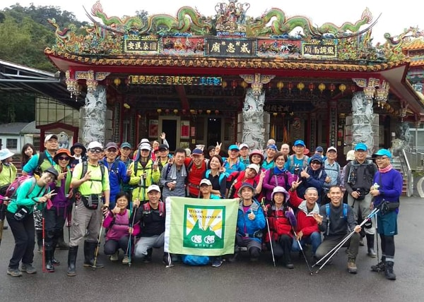
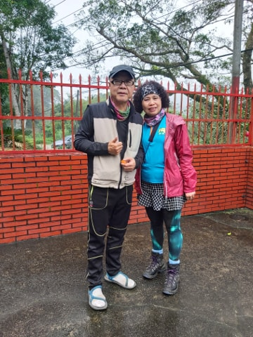
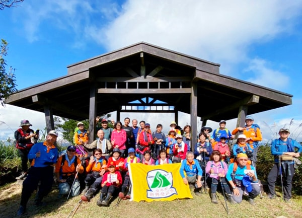
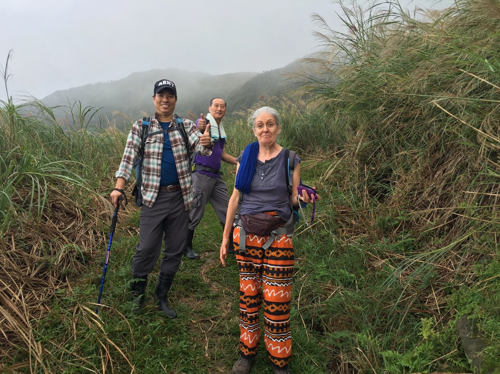
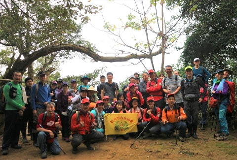

About
About Taiwan Hikes and Anusha

Hi, I'm Anusha, the creator of this website. The main purpose of Taiwan Hikes is to provide an information hub for visitors or people who don’t read Chinese to find free guided trips in Taiwan and enjoy the hiking with the local people safely. For most people from other countries, solo hiking or hiking only with close friends or families is more popular than hiking with a bunch of strangers. But due to the unique and complicated trail terrains in Taiwan, I still strongly encourage international visitors to hike with the locals for the safety reasons.
Hiking in Taiwan: A Gem under the Radar
Taiwan is very small, 35,980 km2 (13,974 m2), and most people’s impression toward Taiwan is the manufacturing industry and food. However, Taiwan has more to offer.
On this tiny island, 70% of Taiwan is covered by mountains, and there are 268 mountains that are over 3,000 meters (9,842 feet) above the sea level. You can imagine how many wonderful trails we have here in Taiwan.
If you are looking for a brand-new place to hike, to experience very different culture, to see the mountain and ocean views at the same time, and more, Taiwan is the right place for you.
Provide Doable Solo Hike Options
Other than group hikes, I will also document my hiking trips that are suitable for solo hikes and share with those who still want to hike on their own. As long as you are well prepared and in a good physical condition, doing solo hike is a lot of fun in Taiwan. As a local, I have the advantage of finding out information in Chinese and share it in English, and I hope this will help your stay here easier and enjoy the unique nature in Taiwan.
The content, images (unless specified) and code are mainly written or taken by Anusha Lee.
How Did This Get Started?
Other than being an avid hiker, I’m also a self-taught web developer. I started hiking regularly in early 2017 and started my journey of learning how to code later in the same year.
There are so many hiking associations in Taiwan. As a new hiker, it was a no-brainer for me to hike with them. On those hiking trips, I meet many hikers who also share the love to the nature in Taiwan, and I also get to hike many remote places that I would never be able to go on my own.
During my hike, I met some hikers from other countries and had conversations with them. I asked them how they found the trails, they told me they Google. I also heard some terrible hiking stories about some international visitors getting lost on the trails.
Combine Things I love Together
Since I was looking for personal projects to showcase my coding skills, I thought why not combining those things I enjoy together? That’s how Taiwan Hikes was born.
I prefer to take more challenging hikes like 中級山 Mid-range Mountain trails and some of those may not be easy to access or suitable for most people. One of the reasons is it’s less crowded on those trails, and sometimes I get to see the amazing views on those trails. So, if you’re not a regular hiker, please take rate A trails to make sure you can enjoy your trip without feeling exhausted. I’ll also share other English blogs in the resource page if you want to look for more options.
This is an ongoing project and sometimes I will come up with some crazy ideas about the content I want to present. I will update the content of Taiwan Hikes from time to time. If you’d like to receive updates about this website, please sign up for our newsletters.
Disclaimer
The author(s) and contributors of Taiwan Hikes and the guides of those hiking trips are not responsible for any damage, personal injuries or death as a result of the use of any information, maps, routes, advice, gear or techniques discussed on this blog and website. All outdoor activities are carried out at your own risk.
Please remember your safety is your own responsibility.
Please remember your safety is your own responsibility.
About 台灣山野樂活協會
TAIWAN MOUNTAIN LOHAS ASSOCIATION
Mostly from LOHAS’s website

“Established in 2010, LOHAS welcomes everyone who loves the nature and is interested in outdoor activities. Our beliefs are ‘Respect for people’ and ‘People are born good’, and we want to build a hub for people to explore by adopting ‘More Trust, Less Management’ principle. You will find groups of like-minded people and become friends for life. We also welcome hiking guides from different hiking associations to build up your communities here. No matter the activities are easy or challenging ones, hiking, biking, river tracing, domestic or international hikes, you will realize how broad and wide the world is and people can be so compatible together.”
My Hiking Experience with LOHAS
I’ve been hiking with LOHAS since 2017. Compared to other hiking associations in Taiwan, LOHAS seems to have less hiking trips. The main reason is LOHAS requires the lead guide has to hike the trails in advance before the trips can be evaluated and open to the public. LOHAS guides are very friendly, and their average age is relatively younger than other associations, which also attract younger hikers. Most LOHAS guides are very patient, and they are quite well-trained. LOHAS has a wide range of hiking trips, from very challenging to very easy ones. Many guides speak English, too. LOHAS is one of my favorite hiking associations. LOHAS’ guides wear orange uniforms, which is easy to recognize them.
About 新北市嘟嘟健行登山協會
NEW TAIPEI CITY DUDU MOUNTAIN ASSOCIATION

My Hiking Experience with Dudu

There isn’t much ‘About’ information on Dudu’s private Facebook Group page or their blog.
I’ve been hiking with Dudu since 2017, too. The main contacts of Dudu are Lu Ge, Brother Lu 陸哥, and Xu Jie, Sister Xu 徐姐. They are a couple in their mid-60s, but look like in their early 50s. They are super friendly and hospitable, and they have been in this hiking community for about two decades. When hiking with Dudu, Lu Ge and Xu Jie sometimes will serve free hot foods in winter or iced drinks in summer. Dudu also has many guides, and is officially registered as an association in 2018.
About 台北市新興登山會
TAIPEI XING XING HIKING CLUB

My Hiking Experience with Xing Xing
According to Xing Xing’s public Facebook Group, Xing Xing’s main goals are to provide hiking activities to increase people’s mental and physical health, establish friendships, and improve the society. Xing Xing has been taking hikers to enjoy the nature for more than 20 years. I started hiking with Xing Xing in 2019, and they are very friendly. Their average age is older, too. Their director told me that they once had a French tourist hiking with them and she was surprised to try guavas for the first time, a very common fruit in Taiwan, offered by him and other hiking mates. Xing Xing’s trips are quite easy, and you sometimes will get to see amazing views from those hikes. If you want to enjoy the easy hikes without being exhausted too much, I will recommend you check out Xing Xing’s trips.

About 新北市山岳協會(北岳) THMA

Mostly from THMA website
Established in 1973, THMA is one of the oldest hiking associations in Taiwan, and has trained many experienced and good guides in local hiking community. THMA has been training many hiking guides over those decades. THMA dedicates to serve hikers in Taiwan, and work strivingly to establish a better and safer hiking community and devote their time to the mountain rescue, and dedicate to carry on the spirit of Mt. Jade juniper, which is mostly seen at elevations of 3,400 meters (11,155 feet) above sea level in Taiwan.
My Hiking Experience with THMA
THMA provides many trips to hikers and their trips are relatively long and challenging compared to other hiking associations, at least from my experience. The average age of THMA hikers is older than others, which is not a surprise because THMA has been established for almost five decades. Although THMA’s hikers are older, their pace is so fast that I was joking they hike like bullet trains and me like Thomas and Friends.
If you are looking for challenging hikes, you will enjoy a lot with THMA’s trips. However, if you just want to have an easy and short hike, please only check out their shorter trips with A ratings.